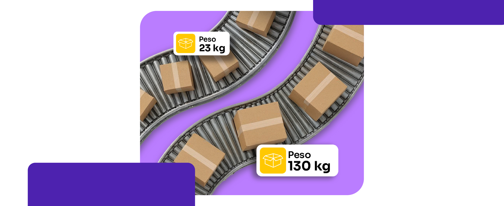
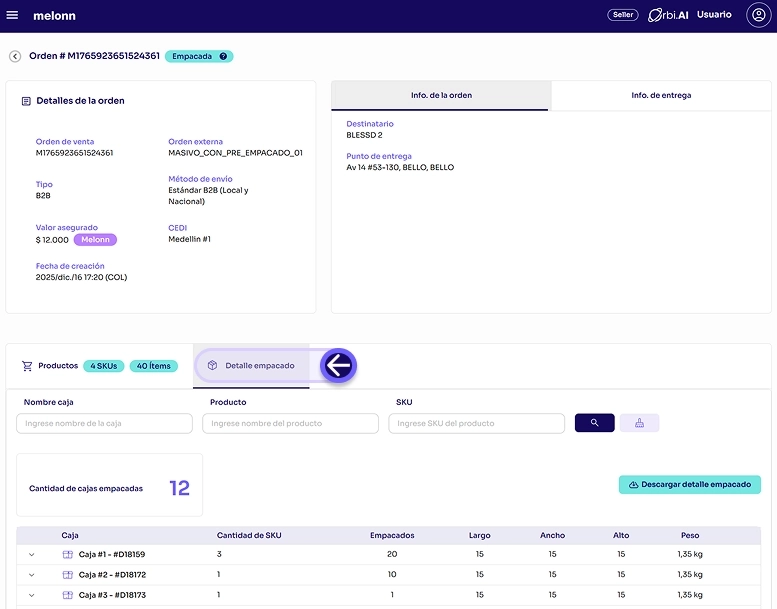

b2B
VAS sistematizados y detalle por caja en Órbita
Lanzamos una nueva experiencia de empaque B2B en el detalle de la orden que centraliza y sistematiza la información por paquete/caja (contenido, cantidades, peso/medidas y evidencia cuando aplique).
Esto reduce errores, mejora trazabilidad, evita rechazos por requisitos logísticos y permite medir productividad operativa con datos confiables. Además, se eliminan 3 VAS anteriores porque esa información ahora queda visible automáticamente en la orden.

Cuando la orden se encuentre en estado Empacado, podrás visualizar en el detalle del contenido de cada paquete los datos capturados.
¿Para qué sirve esta vista?
Validar que tu orden fue empacada correctamente.
Compartir detalle con destinatarios o retailers y facilitar recepción en destino.
Controles internos, conciliaciones o auditoría logísticas.
¿Listo para integrar?